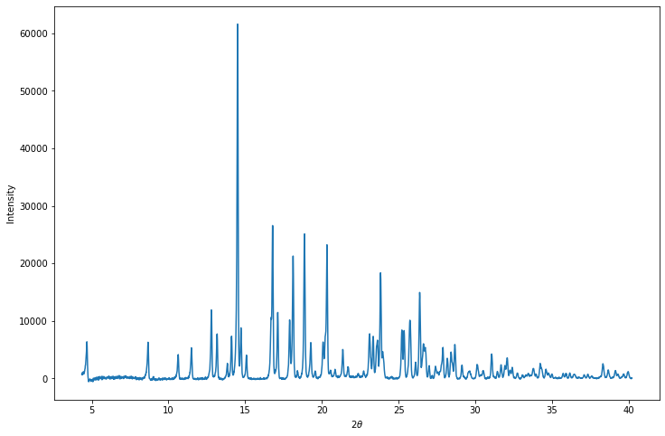
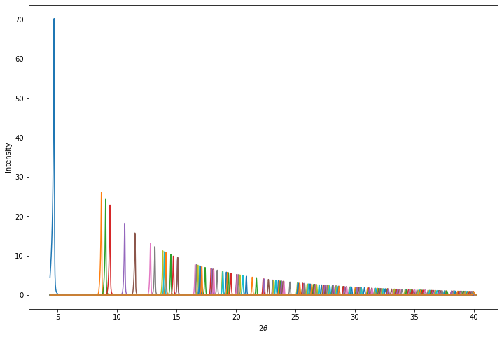
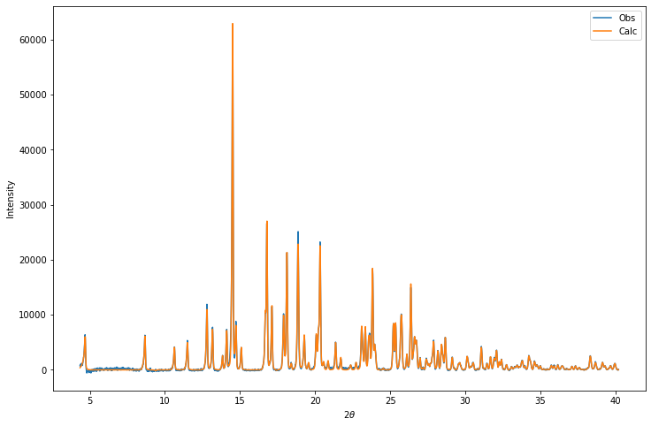
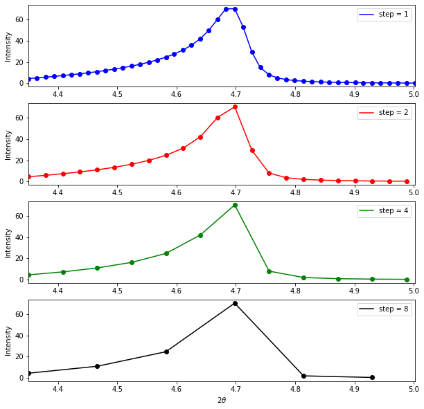
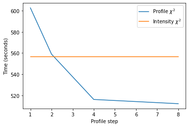
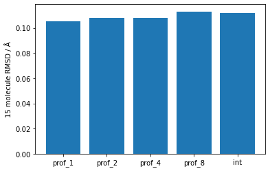

import numpy as np
import matplotlib.pyplot as plt
from gallop import files
profile, baseline_peaks, n_contributing_peaks = files.dash.read_DASH_pik("Verap.pik")Introduction
The correlated integrated intensity \(\chi^2\) figure of merit has been shown to be equivalent to the profile \(\chi^2\), but is more efficient to calculate in CPU-based code. This is due to the sparsity of the inverse covariance matrix (typically only 1-5% of the elements will be non-zero if using DASH’s 20% correlation cut-off), which means that only a small number of non-zero elements need to be multiplied and summed. Code that exploits this property can therefore obtain very high performance - this is the approach embodied in the fortran code used in DASH.
The intensity \(\chi^2\) figure of merit in GALLOP does not exploit the sparsity of the inverse covariance matrix; instead the matrix is treated as dense and a full matrix multiplication is performed. This is because very fast matrix multiplication routines which make effective use of the parallel processing capabilities of GPUs are available in cuBLAS. Sparse matrices are currently less well supported, and though there has been a lot of progress, performance remains generally worse.
This got me thinking: given that we aren’t currently able to make best use of the sparsity of the inverse covariance matrix in GALLOP and instead treat it as a dense matrix, can the profile \(\chi^2\) also be implemented in a manner that is amenable to GPU acceleration, and if so, how does the performance compare to the intensity \(\chi^2\) figure of merit that is currently used?
To tackle this, we’ll take a look at the output files produced by DASH during its Pawley fitting procedure, and work out how the full profile can be (rapidly) reconstructed.
DASH Pawley output files
Following Pawley refinement in DASH, several files are produced: - .dsl - wavelength, peak shapes and Pawley refinement settings - .hcv - hkl indices, intensities and (inverse) esds as well as the off-diagonal elements of the inverse correlation matrix, from which the inverse covariance matrix is constructed. - .pik - the (background subtracted) profile, unit intensity peaks, esds (we’ll look at this in more detail below) - .sdi - unit cell, space group, Pawley profile \(\chi^2\) figure of merit - .tic - hkl, twotheta
GALLOP contains functions that read these files, which can be found here.
To calculate the profle \(\chi^2\), we’ll need to take a closer look at the PIK file.
PIK file
This file contains all of the information we’ll need to calculate the profile \(\chi^2\).
In general, the lines follow the following structure:
twotheta intensity ESD Number of peaks contributing to this pointIf the number of peaks contributing to a particular point is zero, then this is just background noise, and the next line will have the same format. Here’s an example of a section of background intensity from the PIK file for verapamil hydrochloride:
5.016000 -323.4935 202.1800 0
5.031000 -382.2603 201.2000 0
5.045000 -315.5720 201.4600 0
5.060000 -250.9787 201.7000 0However, if the number of peaks that contribute to a point is greater than 0, then the next line(s) contain information about the contributing peaks. If there are N peaks that contribute intensity to a particular point, then the next line(s) will have the following structure:
twotheta intensity ESD Number of peaks contributing to this point
N x [peak number intensity for peak number]where “peak number” is the position of the particular peak in a sorted list of all of the peak \(2\theta\) positions (i.e. peak number 3 is the peak with the third lowest \(2\theta\) value.) The peak number and intensity information may break over multiple lines, and continues until the intensity and peak number of all N peaks contributing to a particular point have been recorded.
For example, here’s section where there is 1 contributing peak (which happens to be the first peak in the data):
4.350000 744.3560 232.3900 1
1 4.513631
4.364000 639.3544 230.9700 1
1 5.134259
4.379000 1007.128 234.2900 1
1 5.837606Here’s a section with two contributing peaks (which are the second and third peaks in the data):
8.653000 5611.787 179.4200 2
2 22.49174 3 0.1523584
8.668000 6297.480 185.9700 2
2 26.03695 3 0.1624220
8.682000 5904.059 181.7700 2
2 24.64359 3 0.1726878And here’s a section with four contributing peaks (which are the 59th, 60th, 61st and 62nd peaks in the data):
25.09800 883.4489 79.31000 4
59 0.9365445 60 0.1982842 61
0.1636752 62 2.1087736E-02
25.11300 1260.722 81.62000 4
59 1.462635 60 0.3181552 61
0.2449987 62 2.4525421E-02
25.12700 1757.970 84.58000 4
59 2.065944 60 0.5192419 61
0.3785602 62 2.8390534E-02Using the read_DASH_pik function in GALLOP, we can parse a .pik file, and examine the individual peaks and the full diffraction profile.
The profile numpy array contains three columns: twotheta, intensity and ESD.
Code
print("Twotheta Intensity ESD")
print(profile)
plt.figure(figsize=(12,8))
plt.plot(profile[:,0], profile[:,1])
plt.xlabel("$2\\theta$")
plt.ylabel("Intensity")
plt.show()Twotheta Intensity ESD
[[ 4.35 744.356 232.39 ]
[ 4.364 639.3544 230.97 ]
[ 4.379 1007.128 234.29 ]
...
[ 40.167 104.9547 45.65 ]
[ 40.181 -19.50696 44.27 ]
[ 40.196 42.59625 44.96 ]]
The baseline_peaks numpy array has shape (n-peaks, n-points) where n-points is the number of points in the profile and where the Nth row contains the intensity associated with contributing peak N. Let’s plot them all on the same axes:
Code
print("Baseline peaks array shape:",baseline_peaks.shape)
print(baseline_peaks)
plt.figure(figsize=(12,8))
for i in range(baseline_peaks.shape[0]):
plt.plot(profile[:,0],baseline_peaks[i])
plt.xlabel("$2\\theta$")
plt.ylabel("Intensity")
plt.show()Baseline peaks array shape: (252, 2475)
[[4.513631 5.134259 5.837606 ... 0. 0. 0. ]
[0. 0. 0. ... 0. 0. 0. ]
[0. 0. 0. ... 0. 0. 0. ]
...
[0. 0. 0. ... 0.01736796 0.01483574 0.01280165]
[0. 0. 0. ... 0.01911421 0.0161166 0.01376026]
[0. 0. 0. ... 0.01852708 0.01551832 0.01318077]]
This doesn’t look like the observed data!
However, this is intentional. The intensities in the baseline_peaks array have been scaled to correct for peak multiplicity, Lorentz polarisation factor and form-factor fall off and then divided by their Pawley extracted intensity.
This then allows the calculated profile to be rapidly reconstructed by multiplying each of the rows in the baseline_peaks array by the corresponding intensity (i.e. intensities calculated during SDPD or the Pawley extracted intensities), then summing each column in the array to account for intensity contribution from multiple peaks. The profile \(\chi^2\) can then be calculated from the reconstructed profile.
Let’s have a go at reconstructing the profile from the Pawley-refined intensities:
Code
from gallop.structure import Structure
mystructure = Structure(name="verapamil_hydrochloride")
mystructure.add_data("verap.sdi", source="DASH")
# Here we reconstruct the profile by multiplying by the Pawley intensities, then summing each column
calc_profile = (mystructure.intensities.reshape(-1,1) * baseline_peaks).sum(axis=0)
plt.figure(figsize=(12,8))
plt.plot(profile[:,0], profile[:,1])
plt.plot(profile[:,0], calc_profile)
plt.legend(["Obs", "Calc"])
plt.xlabel("$2\\theta$")
plt.ylabel("Intensity")
plt.show()
If we use intensities calculated during SDPD with GALLOP then we will need to scale the calculated pattern in order to properly calculate the \(\chi^2\) value. We calculate the scaling factor using the equation below:
\[ c = \frac{\sum{y_i^{obs}}}{\sum{y_i^{calc}}} \]
This will then allow us calculate the profile \(\chi^2\) value, via:
\[ \chi^2_{profile} = \frac{\sum{\frac{(cy^{calc}_i - y^{obs}_i)^2}{(\sigma_i^{obs})^2}}}{N - P + C} \]
where \(N\) = the total number of observations (i.e. points in the profile), \(P\) = the number of parameters refined and \(C\) is the number of constraints used in the refinement. For the \(\chi^2\) calculation, we will by default consider only the points which have at least one Bragg peak contributing to the intensity of that point as recommended here (pdf).
Code
# Generate a mask that selects only the points containing contributions from at least one Bragg peak
subset = n_contributing_peaks > 0
# Calculate the calculated pattern scaling factor
scale = profile[:,1][subset].sum() / calc_profile[subset].sum()
# The "-2" in the denominator is because DASH refines two background terms during the Pawley refinement by default
prof_chisquared = ((scale*calc_profile[subset] - profile[:,1][subset])**2 / profile[:,2][subset]**2).sum() / (calc_profile[subset].shape[0] - 2)
print("Profile chi-squared =",prof_chisquared)Profile chi-squared = 3.5833747277018166Optimising against the profile \(\chi^2\)
Now that we know how to calculate the profile \(\chi^2\), we should be able to write a function to replace the intensity \(\chi^2\) figure of merit used during the local optimisation code in GALLOP.
Following on from the theme of my previous posts, we’ll stick with verapamil hydrochloride as our test structure. All the data required to replicate this work can be downloaded here.
First, let’s create our structure object and add the data and Z-matrices to it.
import torch
from gallop.structure import Structure
from gallop.optim import local
from gallop.optim import Swarm
mystructure = Structure(name="VerapamilHCl", ignore_H_atoms=True)
mystructure.add_data("files/Verap.sdi", source="DASH")
mystructure.add_zmatrix("files/CURHOM_1.zmatrix")
mystructure.add_zmatrix("files/CURHOM_2.zmatrix")Added Z-matrix with Filename: files/CURHOM_1.zmatrix
Non-H atoms: 1
refinable torsions: 0
Degrees of freedom: 3
Added Z-matrix with Filename: files/CURHOM_2.zmatrix
Non-H atoms: 33
refinable torsions: 13
Degrees of freedom: 20 (7 + 13)Let’s now write a function that calculates the profile \(\chi^2\). We can then use a pytorch just-in-time compilation decorator to hopefully boost performance a bit.
We’ll be calculating many profiles at the same time, so let’s check the logic involved. We will have two pytorch tensors, which will need multiplication then subsequent summation. The calculated_intensities pytorch tensor has shape (n_particles, n_intensities) and the baseline_peaks array has shape (n_intensities, n_points). For each particle, what we want to do is multiply each row of the baseline_peaks by the corresponding calculated intensity, then sum each of the columns to calculate the profile. This is a straightforward matrix multiplication, which can be expressed in torch using the @ operator. The end result will be a pytorch tensor with shape (n_particles, n_points).
@torch.jit.script
def get_prof_chisquared(calculated_intensities, baseline_peaks, scale_numerator, weights, profile):
"""
Calculates profile chisquared from a set of calculated intensities, and baseline peaks derived
from a DASH Pawley PIK file.
Args:
calculated_intensities (PyTorch Tensor): Intensities calculated during SDPD with GALLOP
Shape (n_particles, n_intensities)
baseline_peaks (PyTorch Tensor): Baseline peaks extracted from the DASH PIK file
Shape (n_intensities, n_points)
scale_numerator (PyTorch Tensor): Sum of the observed intensities for all points
Shape (1,)
weights (PyTorch Tensor): Tensor of (1/esd)**2 values, Precalculated to
save time. Shape (n_points,).
profile (PyTorch Tensor): Tensor of the PIK profile, Shape (n_points, 3)
Returns:
PyTorch Tensor: A tensor with shape (n_particles,) containing the profile
chi-square values
"""
# Calculate the profiles by matrix multiplication
calc_profiles = calculated_intensities @ baseline_peaks
# Calculate the scaling factors for the calculated profiles
scale_denominator = calc_profiles.sum(dim=1).unsqueeze(1)
scale = scale_numerator / scale_denominator
# The "-2" in the denominator is because DASH refines two background terms
# during the Pawley refinement by default
prof_chisquared = ((weights*((scale*calc_profiles - profile[:,1])**2)
).sum(dim=1).reshape(-1,1) / (profile.shape[0]-2)).squeeze(1)
return prof_chisquaredWe’ll now need to write our function for the GALLOP loop. One thing that’s worth adding is the ability to reduce the number of points in the profile. This may be useful to help boost performance if the profile has been collected with a very small step-size. This is visualised in the plot below, which shows the first peak in the verapamil hydrochloride data, plotted with different step sizes along the profile.
Code
position = profile[:,0][baseline_peaks[0] > 0]
first_peak = baseline_peaks[0][baseline_peaks[0] > 0]
fig, ax = plt.subplots(4, figsize=(10,10))
colour = ["b", "r", "g", "k"]
for i in range(4):
ax[i].scatter(position[::2**i],first_peak[::2**i], c=colour[i])
ax[i].plot(position[::2**i],first_peak[::2**i], c=colour[i])
ax[i].legend([f"step = {2**i}"])
ax[i].set_ylabel("Intensity")
ax[i].set_xlim(position.min(), position.max())
ax[i].set_xlabel("$2\\theta$")
plt.show()
This plot shows that significantly reducing the number of points in the profile, even at the lowest angle (where peaks are likely to be sharper) still retains the peak shape, so may allow us to cut the number of points we need to evaluate without reducing the accuracy of our results. This approach gives a consistent step size over the whole profile - there are probably more sophisticated ways of sampling from the profile that might work even better, perhaps non-uniform sampling that is guided by increasing peak-width with \(2\theta\).
Now we’ll write our GALLOP loop - effectively, this is a slightly modified version of what is on the GALLOP github repository, wrapped in a function to allow easy comparison of the profile and intensity \(\chi^2\) functions with the same code.
import tqdm
import time
from gallop import zm_to_cart
from gallop import intensities
from gallop import tensor_prep
from gallop import chi2
def gallop_solve(mystructure, n_particles, n_swarms, learning_rate, gallop_iters,
local_iterations, step=1, use_profile_chisquared=True, seed=None):
"""
Solve structures with GALLOP, and easily toggle between profile chisquared
and intensity chisquared.
Args:
mystructure (Structure): GALLOP structure object
n_particles (int): number of particles
n_swarms (int): number of swarms
learning_rate (float): Learning rate
gallop_iters (int): Number of GALLOP iterations
local_iterations (int): Number of local iterations per GALLOP iteration
step (int, optional): Slicing of the profile array to select fractions
of the data. Step = 2 would select every other point in the profile.
Defaults to 1 (i.e. all points in the profile)
use_profile_chisquared (bool, optional): Toggle between profile and
intensity chisquared. Defaults to True.
seed (int): Defaults to None. Random seed to use for numpy.
"""
if seed is not None:
np.random.seed(seed)
# Let's first create our swarm object and generate the random starting
# positions
swarm = Swarm(mystructure, n_particles=n_particles, n_swarms=n_swarms)
print("Generating start positions")
external, internal = swarm.get_initial_positions()
# Get the Torch tensors we'll need for calculating the profile chisquared
subset = mystructure.n_contributing_peaks > 0
baseline_peaks = torch.from_numpy(
mystructure.baseline_peaks[:,subset][:,::step]
).type(torch.float32).cuda()
profile = torch.from_numpy(
mystructure.profile[subset][::step]
).type(torch.float32).cuda()
scale_numerator = profile[:,1].sum()
weights = profile[:,2]**(-2)
print("Running GALLOP")
# The main GALLOP loop
start_time = time.time()
for i in range(gallop_iters):
tensors = tensor_prep.get_all_required_tensors(mystructure,
external=external, internal=internal)
optimizer = torch.optim.Adam([tensors["zm"]["external"],
tensors["zm"]["internal"]],
lr=learning_rate,
betas=[0.9,0.9])
local_iters = tqdm.trange(local_iterations)
for j in local_iters:
# Zero the gradients before each iteration otherwise they accumulate
optimizer.zero_grad()
asymmetric_frac_coords = zm_to_cart.get_asymmetric_coords(**tensors["zm"])
calculated_intensities = intensities.calculate_intensities(
asymmetric_frac_coords, **tensors["int_tensors"])
if use_profile_chisquared:
chisquared = get_prof_chisquared(calculated_intensities, baseline_peaks,
scale_numerator, weights, profile)
else:
chisquared = chi2.calc_chisqd(calculated_intensities,
**tensors["chisqd_tensors"])
# pytorch needs a scalar from which to calculate the gradients, here use
# the sum of all values - as all of the chi-squared values are independent,
# the gradients will be correctly propagated to the relevant DoFs.
L = torch.sum(chisquared)
# For the last iteration, don't step the optimiser, otherwise the chi2
# value won't correspond to the DoFs
if j != local_iterations - 1:
# Backwards pass through computational graph gives the gradients
L.backward()
optimizer.step()
# Print out some info during the runs
if j == 0 or (j+1) % 10 == 0:
local_iters.set_description(
"GALLOP iter {:04d} LO iter {:04d} min chi2 {:.1f}".format(
i+1, j+1, chisquared.min().item()))
# Save the results in a dictionary which is expected by the files and swarm
# functions. The tensors should be converted to CPU-based numpy arrays.
result = {
"external" : tensors["zm"]["external"].detach().cpu().numpy(),
"internal" : tensors["zm"]["internal"].detach().cpu().numpy(),
"chi_2" : chisquared.detach().cpu().numpy(),
"GALLOP Iter" : i
}
# Output a CIF of the best result
files.save_CIF_of_best_result(mystructure, result, start_time)
# Swarm update step
external, internal = swarm.update_position(result=result, verbose=False)
return time.time() - start_timeLet’s give this a go! In the first instance, we’ll use the full profile (i.e. step = 1), then have a go at increasing the step size. I’ll be running this on a machine with an Nvidia RTX2060 GPU, and a fairly old i5 CPU.
n_particles = 20000
n_swarms = 20
learning_rate = 3e-2
gallop_iters = 10
local_iterations = 500
step = 1
use_profile_chisquared = True
total_time_prof_1 = gallop_solve(mystructure, n_particles, n_swarms, learning_rate, gallop_iters, local_iterations,
step=step, use_profile_chisquared=use_profile_chisquared)
print("Total time (profile, step 1):",np.around(total_time_prof_1 / 60, 2),"min")Generating start positions
Total degrees of freedom: 23
Total external degrees of freedom: 10 (pos: 6 rot: 4 )
Total internal degrees of freedom: 13100%|██████████| 20/20 [00:00<00:00, 689.69it/s]Running GALLOPGALLOP iter 0001 LO iter 0500 min chi2 114.1: 100%|██████████| 500/500 [01:00<00:00, 8.22it/s]
GALLOP iter 0002 LO iter 0500 min chi2 44.3: 100%|██████████| 500/500 [00:59<00:00, 8.35it/s]
GALLOP iter 0003 LO iter 0500 min chi2 20.1: 100%|██████████| 500/500 [00:59<00:00, 8.41it/s]
GALLOP iter 0004 LO iter 0500 min chi2 19.6: 100%|██████████| 500/500 [00:59<00:00, 8.40it/s]
GALLOP iter 0005 LO iter 0500 min chi2 19.2: 100%|██████████| 500/500 [00:59<00:00, 8.40it/s]
GALLOP iter 0006 LO iter 0500 min chi2 19.3: 100%|██████████| 500/500 [00:59<00:00, 8.40it/s]
GALLOP iter 0007 LO iter 0500 min chi2 19.4: 100%|██████████| 500/500 [00:59<00:00, 8.39it/s]
GALLOP iter 0008 LO iter 0500 min chi2 19.1: 100%|██████████| 500/500 [00:59<00:00, 8.40it/s]
GALLOP iter 0009 LO iter 0500 min chi2 19.1: 100%|██████████| 500/500 [01:01<00:00, 8.19it/s]
GALLOP iter 0010 LO iter 0500 min chi2 19.1: 100%|██████████| 500/500 [00:59<00:00, 8.40it/s]Total time (profile, step 1): 10.04 minstep = 2
total_time_prof_2 = gallop_solve(mystructure, n_particles, n_swarms, learning_rate, gallop_iters, local_iterations,
step=step, use_profile_chisquared=use_profile_chisquared)
print("Total time (profile, step 2):",np.around(total_time_prof_2 / 60, 2),"min")Generating start positions100%|██████████| 20/20 [00:00<00:00, 800.13it/s]Running GALLOPGALLOP iter 0001 LO iter 0500 min chi2 110.5: 100%|██████████| 500/500 [00:54<00:00, 9.09it/s]
GALLOP iter 0002 LO iter 0500 min chi2 77.8: 100%|██████████| 500/500 [00:55<00:00, 8.96it/s]
GALLOP iter 0003 LO iter 0500 min chi2 71.7: 100%|██████████| 500/500 [00:55<00:00, 8.98it/s]
GALLOP iter 0004 LO iter 0500 min chi2 70.9: 100%|██████████| 500/500 [00:55<00:00, 8.99it/s]
GALLOP iter 0005 LO iter 0500 min chi2 34.7: 100%|██████████| 500/500 [00:55<00:00, 9.00it/s]
GALLOP iter 0006 LO iter 0500 min chi2 19.6: 100%|██████████| 500/500 [00:55<00:00, 8.98it/s]
GALLOP iter 0007 LO iter 0500 min chi2 19.3: 100%|██████████| 500/500 [00:55<00:00, 8.99it/s]
GALLOP iter 0008 LO iter 0500 min chi2 19.4: 100%|██████████| 500/500 [00:55<00:00, 8.99it/s]
GALLOP iter 0009 LO iter 0500 min chi2 19.1: 100%|██████████| 500/500 [00:55<00:00, 8.99it/s]
GALLOP iter 0010 LO iter 0500 min chi2 19.2: 100%|██████████| 500/500 [00:55<00:00, 9.00it/s]Total time (profile, step 2): 9.32 minstep = 4
total_time_prof_4 = gallop_solve(mystructure, n_particles, n_swarms, learning_rate, gallop_iters, local_iterations,
step=step, use_profile_chisquared=use_profile_chisquared)
print("Total time (profile, step 4):",np.around(total_time_prof_4 / 60, 2),"min")Generating start positions100%|██████████| 20/20 [00:00<00:00, 740.83it/s]Running GALLOPGALLOP iter 0001 LO iter 0500 min chi2 109.1: 100%|██████████| 500/500 [00:52<00:00, 9.49it/s]
GALLOP iter 0002 LO iter 0500 min chi2 40.2: 100%|██████████| 500/500 [00:52<00:00, 9.48it/s]
GALLOP iter 0003 LO iter 0500 min chi2 40.5: 100%|██████████| 500/500 [00:52<00:00, 9.45it/s]
GALLOP iter 0004 LO iter 0500 min chi2 39.3: 100%|██████████| 500/500 [00:53<00:00, 9.31it/s]
GALLOP iter 0005 LO iter 0500 min chi2 27.5: 100%|██████████| 500/500 [00:52<00:00, 9.61it/s]
GALLOP iter 0006 LO iter 0500 min chi2 20.0: 100%|██████████| 500/500 [00:49<00:00, 10.02it/s]
GALLOP iter 0007 LO iter 0500 min chi2 19.6: 100%|██████████| 500/500 [00:49<00:00, 10.08it/s]
GALLOP iter 0008 LO iter 0500 min chi2 19.4: 100%|██████████| 500/500 [00:49<00:00, 10.04it/s]
GALLOP iter 0009 LO iter 0500 min chi2 19.4: 100%|██████████| 500/500 [00:50<00:00, 9.99it/s]
GALLOP iter 0010 LO iter 0500 min chi2 19.4: 100%|██████████| 500/500 [00:49<00:00, 10.10it/s]Total time (profile, step 4): 8.6 minstep = 8
total_time_prof_8 = gallop_solve(mystructure, n_particles, n_swarms, learning_rate, gallop_iters, local_iterations,
step=step, use_profile_chisquared=use_profile_chisquared)
print("Total time (profile, step 8):",np.around(total_time_prof_8 / 60, 2),"min")Generating start positions100%|██████████| 20/20 [00:00<00:00, 800.10it/s]Running GALLOPGALLOP iter 0001 LO iter 0500 min chi2 100.4: 100%|██████████| 500/500 [00:48<00:00, 10.39it/s]
GALLOP iter 0002 LO iter 0500 min chi2 40.6: 100%|██████████| 500/500 [00:48<00:00, 10.41it/s]
GALLOP iter 0003 LO iter 0500 min chi2 40.8: 100%|██████████| 500/500 [00:49<00:00, 10.12it/s]
GALLOP iter 0004 LO iter 0500 min chi2 21.5: 100%|██████████| 500/500 [00:48<00:00, 10.29it/s]
GALLOP iter 0005 LO iter 0500 min chi2 21.2: 100%|██████████| 500/500 [00:48<00:00, 10.24it/s]
GALLOP iter 0006 LO iter 0500 min chi2 21.2: 100%|██████████| 500/500 [00:51<00:00, 9.79it/s]
GALLOP iter 0007 LO iter 0500 min chi2 21.2: 100%|██████████| 500/500 [00:52<00:00, 9.53it/s]
GALLOP iter 0008 LO iter 0500 min chi2 21.0: 100%|██████████| 500/500 [00:52<00:00, 9.51it/s]
GALLOP iter 0009 LO iter 0500 min chi2 21.1: 100%|██████████| 500/500 [00:54<00:00, 9.11it/s]
GALLOP iter 0010 LO iter 0500 min chi2 21.0: 100%|██████████| 500/500 [00:54<00:00, 9.19it/s]Total time (profile, step 8): 8.54 minAs expected, when we see a decrease in time taken when we increase the step size.
Performance comparison to intensity \(\chi^2\)
Let’s now run it again, using the standard intensity \(\chi^2\) figure of merit, and plot the run times for easy comparison.
step = 1
use_profile_chisquared = False
total_time_int = gallop_solve(mystructure, n_particles, n_swarms, learning_rate, gallop_iters, local_iterations,
step=step, use_profile_chisquared=use_profile_chisquared)
print("Total time (intensity):",np.around(total_time_int / 60, 2),"min")Generating start positions100%|██████████| 20/20 [00:00<00:00, 606.07it/s]Running GALLOPGALLOP iter 0001 LO iter 0500 min chi2 422.9: 100%|██████████| 500/500 [00:54<00:00, 9.15it/s]
GALLOP iter 0002 LO iter 0500 min chi2 247.6: 100%|██████████| 500/500 [00:55<00:00, 9.06it/s]
GALLOP iter 0003 LO iter 0500 min chi2 212.9: 100%|██████████| 500/500 [00:55<00:00, 9.04it/s]
GALLOP iter 0004 LO iter 0500 min chi2 166.9: 100%|██████████| 500/500 [00:55<00:00, 9.03it/s]
GALLOP iter 0005 LO iter 0500 min chi2 83.3: 100%|██████████| 500/500 [00:55<00:00, 9.01it/s]
GALLOP iter 0006 LO iter 0500 min chi2 58.0: 100%|██████████| 500/500 [00:55<00:00, 9.02it/s]
GALLOP iter 0007 LO iter 0500 min chi2 57.9: 100%|██████████| 500/500 [00:55<00:00, 9.03it/s]
GALLOP iter 0008 LO iter 0500 min chi2 56.7: 100%|██████████| 500/500 [00:55<00:00, 9.03it/s]
GALLOP iter 0009 LO iter 0500 min chi2 56.7: 100%|██████████| 500/500 [00:55<00:00, 9.02it/s]
GALLOP iter 0010 LO iter 0500 min chi2 57.1: 100%|██████████| 500/500 [00:55<00:00, 9.01it/s]Total time (intensity): 9.27 minCode
plt.plot([1,2,4,8],[total_time_prof_1, total_time_prof_2, total_time_prof_4, total_time_prof_8])
plt.plot([1,2,4,8],[total_time_int,total_time_int,total_time_int,total_time_int])
plt.xlabel("Profile step")
plt.ylabel("Time (seconds)")
plt.legend(["Profile $\\chi^2$","Intensity $\\chi^2$"])
plt.show()
We see that using the implementation of profile \(\chi^2\) in this notebook with the full profile incurs an approximately 10 % performance penalty relative to the intensity \(\chi^2\). However, as we decrease the number of points in the profile, we see the time decrease to the extent that it ends up being about 10 % faster than the intensity \(\chi^2\) figure of merit!
However, given that the y-axis as plotted starts around 510 seconds, the time saving overall is not huge. This is because the biggest performance bottleneck in the GALLOP code is the internal to Cartesian coordinate conversion. So even if the figure of merit calculation follows the exponential decay function seen in the graph, then at most, we can expect around a 10 % reduction in time.
In terms of the quality of the results obtained, I checked the 15 molecule RMSD using Mercury - results have been plotted below. There’s not much difference between them - only at the hundredths of ångströms level.
Code
profile_fifteen_mol_rmsd = [0.105, 0.108, 0.108, 0.113]
intensity_fifteen_mol_rmsd = [0.112]
all_data = profile_fifteen_mol_rmsd + intensity_fifteen_mol_rmsd
labels = ["prof_1", "prof_2", "prof_4", "prof_8", "int"]
plt.bar(labels, all_data)
plt.ylabel("15 molecule RMSD / Å")
plt.show()
One final consideration is the memory use - in my testing, I did not see an appreciable difference between the profile \(\chi^2\) with different step sizes and the intensity \(\chi^2\). I suspect this is because much like with the speed of the code, the internal to Cartesian coordinate conversion process contributes signficantly more to the memory use. I will look into this more in the future though!
Conclusions
We’ve seen in this post that it’s relatively easy to understand the PIK file produced by DASH after its Pawley fitting procedure, and use it to rapidly calculate full diffraction profiles. Using these reconstructed profiles, we can then calculate the profile \(\chi^2\) and use this figure of merit in the optimisation of crystal structures. As it turns out, the performance of this is pretty good! The 10 % reduction in speed relative to the intensity \(\chi^2\) we saw in the example we looked at here is not huge, but may still merit an update to GALLOP to include it as an option.
Extending this work
One obvious thing to do would be to see if this can also be done easily with GSAS-II output files, or indeed other programs that are capable of Le Bail fits.
Another interesting possibility would be to have a go using the integrated profile strategy employed by FOX (pdf) which should afford improved performance.
One other thing which I really should get round to looking into is how the 20 % correlation threshold used in DASH for the intensity \(\chi^2\) calculation influences the optimisation behaviour. Given that there is no performance penalty with setting this threshold in GALLOP to zero, it might be interesting to run some large-scale experiments to see if there’s anything to be gained by including such lower-level correlations into the figure of merit.
Anyone interested in trying that for themselves can do so in GALLOP python mode easily. When reading in the data, add the percentage_cutoff argument, which defaults to 20 in order to match DASH.
mystructure.add_data("filename.sdi", source="DASH", percentage_cutoff=0)This also applies to GSAS-II and TOPAS derived data files.